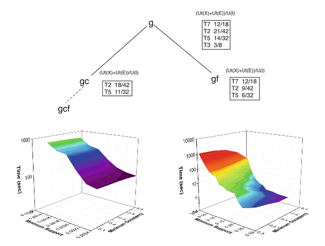
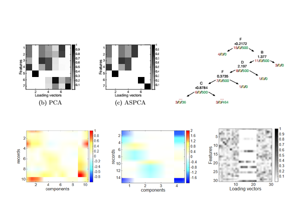
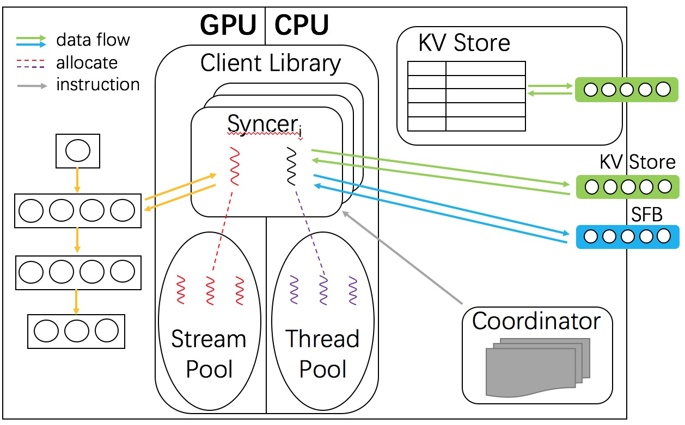

Ph.D. Student
Institute for Software Research
School of Computer Science
Carnegie Mellon University
Pittsburgh, PA 15213, USA
Email: shenbilong AT gmail dot com
Email: shenbilong AT gmail dot com
I am currently a visiting scholar in Institute for Software Research, Carnegie Mellon University. My advisor is Prof. Kathleen M. Carley. I am a Ph.D student from Tsinghua University, China. My advisor is Prof. Weimin Zheng . My research interests mainly focus on Spatial time series Data Mining, Machine Learning, Deep Learning, and their applications in real world problem.

|
V-Tree: Efficient kNN Search on Moving Objects with Road-Network Constraints
IEEE International Conference on Data Engineering (ICDE 2017), April 19-22, 2017, San Diego, California, USA
|
|  |
OCEAN: Fast Discovery of High Utility Occupancy Itemsets
The Pacific-Asia Conference on Knowledge Discovery and Data Mining (PAKDD'16), April 19-22, 2016, Auckland, New Zealand
|
|
Dynamic Ridesharing
Journal of SIGSPATIAL Special, Volume 7 Issue 3, November 2015, ACM New York, NY, USA
|
|
|
Survey on Dynamic Ridesharing in Big Data Era
Journal of Computer Research and Development
|
|
|  |
Abnormal Subspace Sparse PCA for Anomaly Detection and Interpretation
in Proceedings of SIGKDD'15 Workshop on ODDx3. August 10-13, Hilton, Sydney
|
|  |
V-Tree: Efficient kNN Search on Moving Objects with Road-Network Constraints
ICDE 2017
|